1
Click ⚙ Adapt
Open Reports from the sidebar. On the Analytics tab, ⚙ Adapt at the top right lets you choose which cards to show.
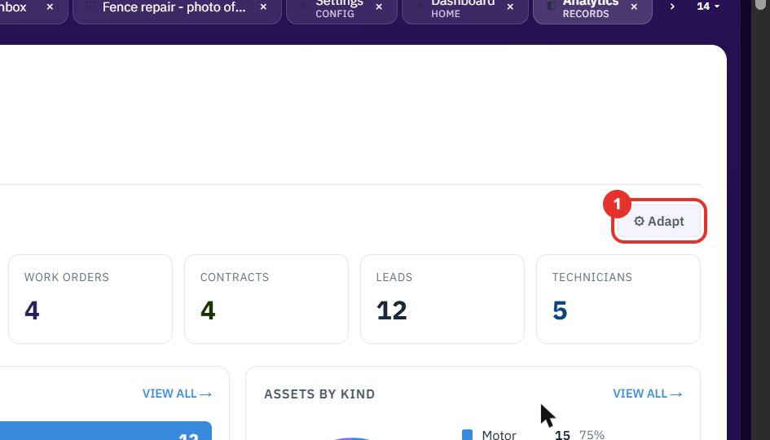
Analytics shows the state of your business on one page and lets you export the lists behind it. Talk to data answers a question you type in plain English with a chart and the line that says what was measured.
Do this to see counts, charts and lists for the modules your workspace uses.
Open Reports from the sidebar. On the Analytics tab, ⚙ Adapt at the top right lets you choose which cards to show.

The row of tiles at the top counts ACCOUNTS, CONTACTS, ASSETS, OPEN CASES, WORK ORDERS, CONTRACTS, LEADS and TECHNICIANS.
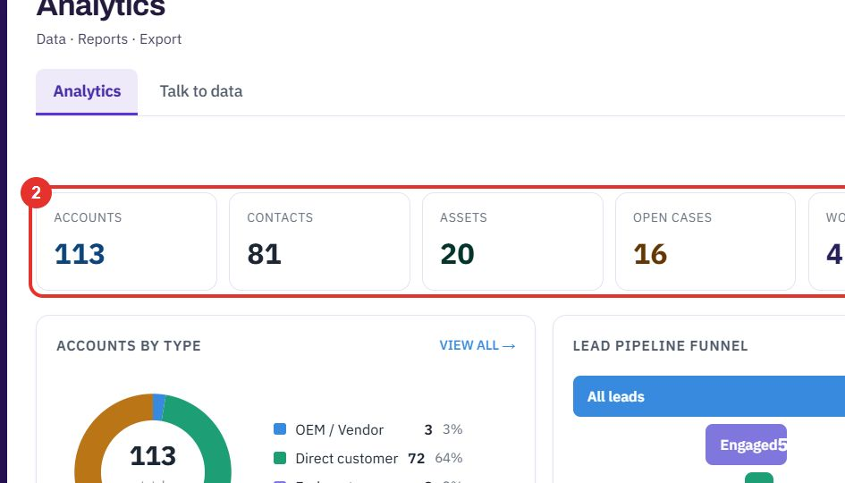
Each chart card has a VIEW ALL → link that opens the full list behind the chart.
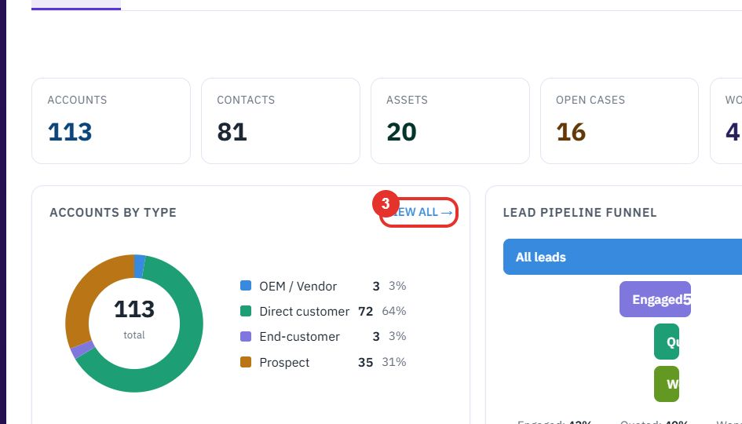
At the bottom, the QUOTATIONS table shows how many rows match, for example 182 OF 182. Click ▼ Filters to narrow the rows.
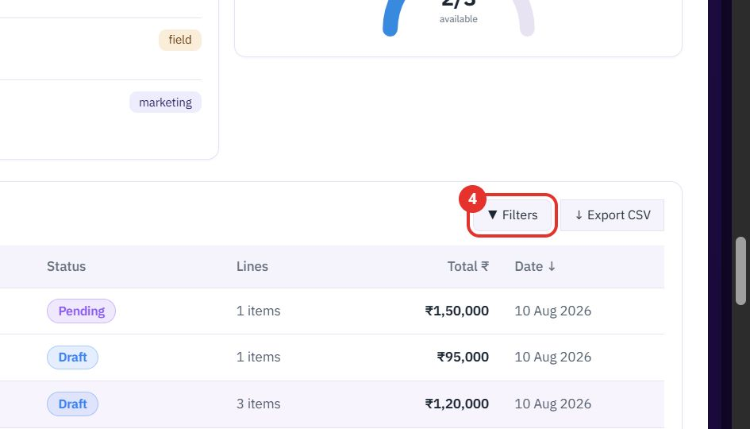
↓ Export CSV downloads the rows you see as a CSV file you can open in a spreadsheet.
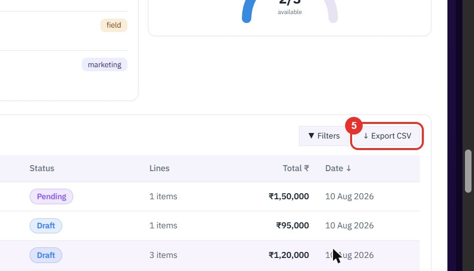
Do this when no ready-made chart answers your question.
On the Reports page, click Talk to data next to Analytics.
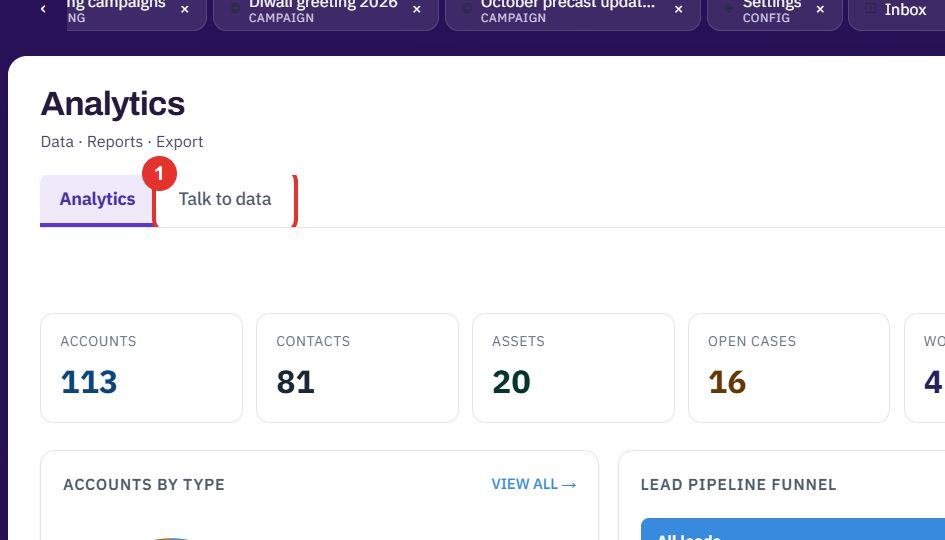
Type a question in plain English in the box, for example Top 5 accounts by open quote value. It can be about quotes, accounts, cases, invoices, products and more.
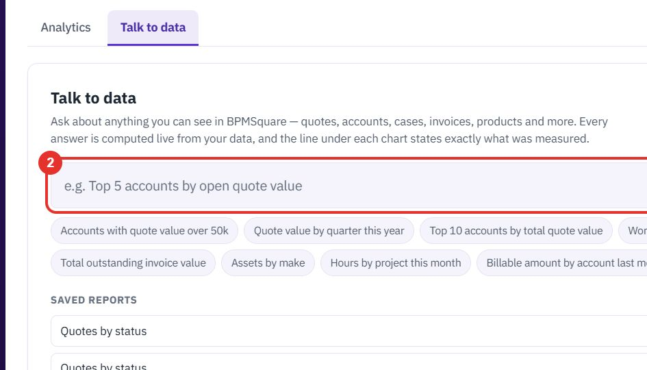
Under the box are ready-made questions, such as Open cases by status. Click one to ask it.
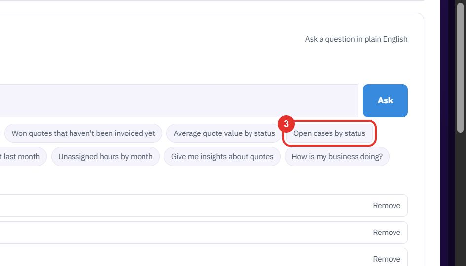
If you typed your own question, click Ask.
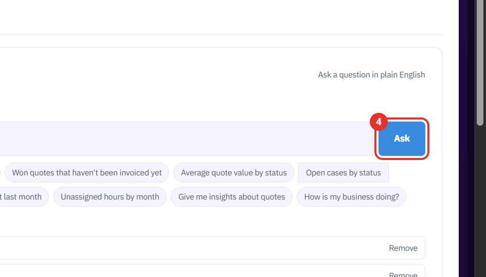
The answer is a chart. A line under the title says exactly what was measured. Click View as table to see the same numbers as rows.
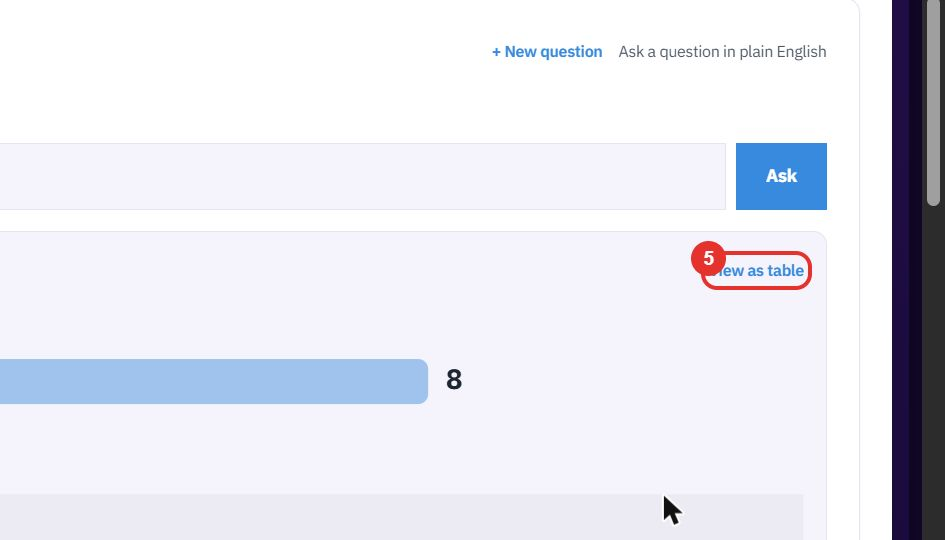
Save this report keeps the question under SAVED REPORTS, where you can ask it again with one click or remove it.
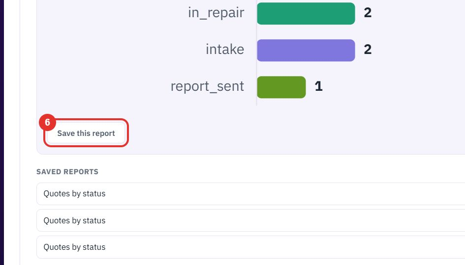
Twenty minutes on a live workspace. Your BOQ, your suppliers.